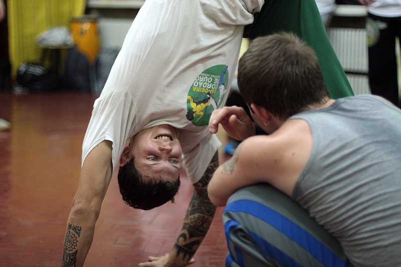
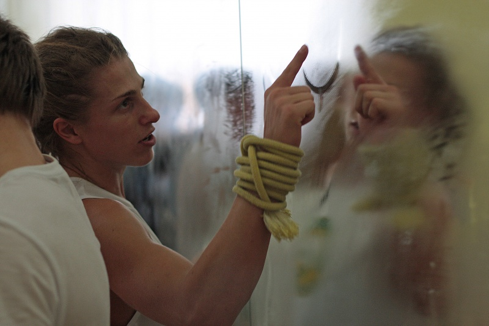
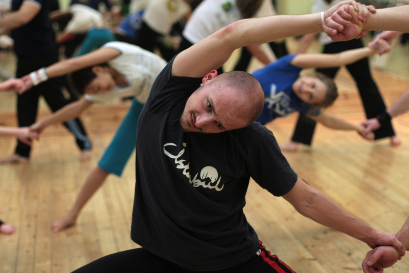
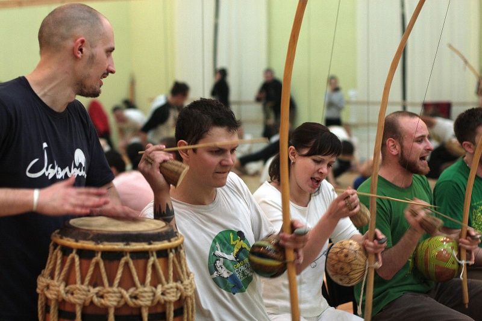
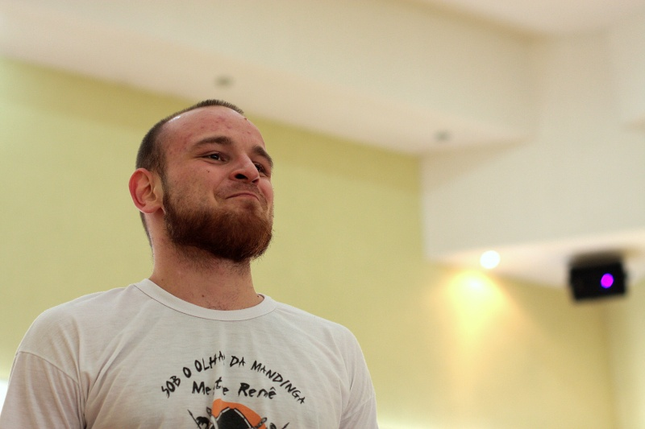
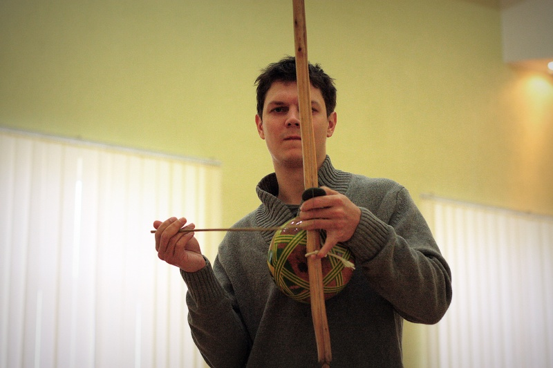
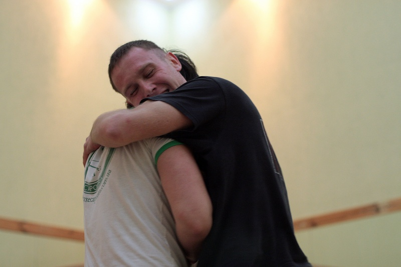
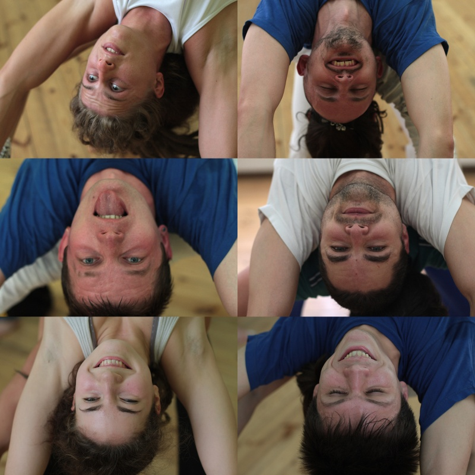

Как Сет в Харьков на семинар ездил.
Тем временем Сет провел трехдневный семинар. А я со своей стороны какие душевности успела — такие запечатлела)


/uploads/image/2013/03/14/5574373ecb_original.jpg Как Сет в Харьков на семинар ездил.
/uploads/image/2013/03/14/bfb988765c_original.jpg Как Сет в Харьков на семинар ездил.
/uploads/image/2013/03/14/3fee3b63bc_original.jpg Как Сет в Харьков на семинар ездил.
/uploads/image/2013/03/14/cde10bcfc9_original.jpg Как Сет в Харьков на семинар ездил.
/uploads/image/2013/03/14/2a26320f9a_original.jpg Как Сет в Харьков на семинар ездил.
/uploads/image/2013/03/14/04c0d2d2c2_original.jpg Как Сет в Харьков на семинар ездил.
/uploads/image/2013/03/14/54ccfaa247_original.jpg Как Сет в Харьков на семинар ездил.
/uploads/image/2013/03/14/bbec28c2d9_original.jpg Как Сет в Харьков на семинар ездил.Остальное хранит наш любимый контакт.
Спасибо ребятам из Харькова. Всех люблю, все круты, пошла реветь от счастья.)